01 · Cél és hatókör
Az alkalmazás a meglévő WordPress/WooCommerce weboldalhoz kapcsolódó, mobilra telepíthető PWA. A családi jegy 3 hónapig egyszer használható, a bérlet az első használattól 8 hónapig érvényes. A foglalás családonként egy helyet foglal. Az értesítések manuálisan küldött push-ok egyéves előzményei. Nem külön webshop és nem külön adminrendszer.
Vásárláskor az összes aktuálisan megvásárolható WooCommerce-terméket listázni kell, továbbá a külön 8 000 Ft/hó Ringató App előfizetést, automatikus megújulással és lemondással. A korábbi Online Ringató kivezetésre kerül. Nincs Kuponjaim funkció, nincs olcsóbb rövid hozzáférés.
A jelenlegi GitHub Pages demó nem végez valós fizetést, foglalást, bérletlevonást vagy üzenetküldést; a terméklista mintakínálat. Az éles rendszerben WordPress/WooCommerce a kizárólagos adatforrás.
02 · Funkciólista
| ID | Funkció | Leírás |
|---|---|---|
| F01 | Felhasználói profil | WordPress ügyfélfiók, saját jogosultságok és rendelési előzmények. |
| F02 | Főoldal | A legközelebbi lejáratú, még használható családi jegy vagy aktív bérlet előre sorolása. |
| F03 | Hang- és videotár | Audio vagy video médiák, kategóriák, keresés, jogosultságok. |
| F04 | Egyedi lejátszás | Tárból vagy kedvencekből választott egyetlen tartalom játszódik le, automatikus továbblépés nélkül. |
| F05 | Lejátszási sor | Külön elérhető lista, fel/le átrendezés, tetszőleges elemről indítás, automatikus következő elem, végén megáll. |
| F06 | Videolejátszás | Natív képarány 16:9 vagy 9:16, nincs képarányváltó; fullscreen, orientációkezelés álló és fekvő telefonon. |
| F07 | Kedvencek | Fiókhoz rendelt kedvenc média, közvetlen egyedi lejátszással. |
| F08 | Havi app-előfizetés | 8 000 Ft/hó; WooCommerce- és Barion-alapú, engedélyezett automatikus megújulás. |
| F09 | Előfizetés lemondása | Megújulás leáll, hozzáférés a kifizetett időszak végéig. |
| F10 | Webshop termékei | Az összes aktív, megvásárolható WooCommerce-termék; megszűnt Online Ringató nem értékesíthető. |
| F11 | Családi jegy | Egyszeri belépés bármely nem külön áras programra; 3 hónapig érvényes vásárlástól. |
| F12 | Bérlet | 8 alkalom; első felhasználáskor induló 8 hónapos érvényesség; beléptetéskor csökken. |
| F13 | Jegy és bérlet QR | Saját jogosultság QR-je; érvényesség, felhasználtság és lejárat megjelenítése. |
| F14 | Egyszer használható jegy | Staff mobilos QR-ellenőrzés, atomikus beváltás; ugyanaz a jegy más programra sem használható. |
| F15 | Programrészletek | Időpont, helyszín, leírás, naptárhoz adás; foglalás vagy vásárlás előtt és után is. |
| F16 | Rendszeres program | Nem létszámlimites, nem foglalós; érvényes családi jeggyel vagy bérlettel látogatható. |
| F17 | Limitált alapdíjas program | Külön családonként 1 hely foglalása szükséges, valamint belépéskor jegy/bérlet. |
| F18 | Limitált külön áras program | A speciális WooCommerce eseményjegy vásárlása a foglalás; nem váltható be más rendezvényen. |
| F19 | Családi férőhely | 1 család = 1 foglalási kapacitásegység, a gyermekek számától függetlenül. |
| F20 | Vásárlási előzmények | Rendeléshez kapcsolt jegy/bérlet státusz: használható, felhasznált, lejárt, következő lejárat. |
| F21 | Push kampánykezelés | Virág dönti el, kinek és mit küld; egyéni címzés, saját ügyfélcsoportok szerkesztése. |
| F22 | Push előzmények | A felhasználó által kapott push-ok 365 napos listája, utolsó panelmegnyitás óta új jelzéssel. |
| F23 | Üzenetek | WordPress Better Messages vizsgálat: ingyenes AJAX frissülés; opcionális licencelt WebSocket. |
| F24 | Virág staff beléptetés | Rendszeres/limitált/eseményjegy jogosultságok ellenőrzése, egyszeri beváltás és napló. |
| F25 | WordPress admin | Termékek, programok, címzett csoportok, push kampányok a WP adminban. |
| F26 | Nincs a V1-ben | Kuponjaim, Online Ringató új értékesítése, rövid idejű olcsó médiacsomag. |
03 · Kezelt entitások és kapcsolatok
| Entitás | Fő tulajdonságok | Kapcsolat |
|---|---|---|
| WP User | id, név, email, szerepkör, push-hozzájárulás | Rendelések, család, üzenet, célcsoport tagság |
| Family / Booking Unit | id, user_id, megjelenített családnév, 1 kapacitásegység | Programfoglalás egy családnak, nem személyenként |
| WC Product | id, név, ár, aktív, elérhetőség, típus, event_id? | Jegy, bérlet, külön esemény, előfizetés |
| WC Order / Item | id, user_id, items, amount, currency, paid_at, status | Ticket / Pass / Subscription jogosultság keletkeztetése |
| Subscription | id, user_id, plan_id, state, period_end, renewal_enabled | 8 000 Ft/hó, WooCommerce subscription + Barion recurring |
| Payment Transaction | id, provider_reference, order_id, status, verified_at, idempotency_key | Barion webhook, csak sikeres fizetés véglegesít |
| Program / Event | id, type(open,reservation,paid), title, start,end,venue, description, capacity_families?, product_id? | Programrészletek; naptár .ics |
| Reservation | id, user_id, event_id, family_unit=1, status, created_at | Limitált alapdíjas program, külön belépési jogosultsággal |
| Family Ticket | id, order_item_id, purchased_at, expires_at=purchase+3mo, used_at?, event_used_id? | Egyszeri belépés bármely nem külön áras programra |
| Special Event Ticket | id, order_item_id, event_id, used_at?, status | Csak az adott külön áras eseményre |
| Pass | id, order_item_id, 8 initial_uses, remaining, first_used_at?, expiry_at=first_used+8mo | Nem külön áras program, első használattal aktiválódik |
| Entry / Redemption | id, entitlement_type/id, event_id, family_id, staff_id, timestamp, unique_key | Atomikus ticket status vagy pass-alkalom változás, audit |
| Media | id, title, category, type(audio/video), aspect_ratio?, duration, source, premium, artwork | Audio/videó lejátszás és jogosultság |
| Favorite | id, user_id, media_id, added_at | Felhasználó kedvence |
| Play Queue / Item | id, user_id, media_id, position, updated_at | Átrendezett elemek és autoplay |
| Message / Thread | id, thread_id, sender_id, recipient_id, text, sent_at, read_at | WP Better Messages vagy egyedi adapter |
| Push Campaign | id, sender_id, body, audience_type, scheduled_at?, sent_at, status | Virág manuális címzés |
| Push Group / Membership | group_id, title, user_id, membership_status | Egyéni csoportos címzés |
| Push Receipt | id, campaign_id, recipient_id, sent_at, delivered_at?, clicked_at? | 1 éves értesítési előzmény |
| Notification Read Cursor | user_id, last_panel_opened_at | ÚJ jelölés a megnyitás óta érkezett push-oknál |
04 · Állapotok
| Terület | Állapotgép |
|---|---|
| Családi jegy | megvásárolt → érvényes 3 hónapig → egyszer felhasznált VAGY lejárt; felhasznált nem aktiválható újra |
| Bérlet | megvásárolt / még nem indult → első beléptetés (8 hónap indul) → maradék csökken → elfogyott VAGY lejárt |
| Külön áras jegy | rendelés függőben → fizetett / eseményhez foglalt → eseményen felhasznált; más eseményen érvénytelen |
| Alap program | rendszeres → nincs foglalás → ticket/pass beléptetés |
| Korlátozott program | hely elérhető → 1 családi foglalás → részletek újra megtekinthetők → ticket/pass beléptetés |
| Előfizetés | inaktív → recurring engedély és fizetés → aktív → megújuló / lemondott időszak vége → lejárt |
| Média | audio/video → önálló lejátszás → szünet / fullscreen videó / orientációváltás |
| Lejátszási sor | üres → elem hozzáadása / sorrend módosítás → kiválasztott kezdőelem → automatikus következő → sor vége |
| Push | célközönség csoportjai → Virág manuális kiküldése → felhasználó 365 napos listája → új / már látott |
| Üzenet | elküldött → megérkezett → olvasott; AJAX rövid késleltetés vagy WebSocket realtime |
05 · Üzleti folyamatok és navigáció
1. Jegy vásárlás és életciklus
WooCommerce jegy → fizetett rendelés → családi jegy. Lejárat: vásárlástól 3 naptári hónap. Egyetlen beléptetés bármely nem külön áras programra; QR érvénytelenítés szerveren atomikus és minden programra globális. Korábbi vásárlások listájában felhasználható / felhasznált / lejárt.
2. Bérlet
WooCommerce bérlet → 8 felhasználható alkalom; első beléptetés indítja a 8 naptári hónapot. Minden beváltás 1 alkalom. Nem külön áras foglalkozásokon érvényes, kötelező foglalás esetén a foglalást külön kell intézni.
3. Rendszeres foglalkozás
Programok → részletek → időpont, helyszín, leírás, naptárhoz adás. Nincs kapacitás és foglalás. A helyszínen családi jegy vagy bérlet szükséges.
4. Limitált alapdíjas program
Programok → részletek → 1 család = 1 foglalható hely → foglalás. A részletoldal utána is elérhető. Helyszínen a foglaláson felül külön jegy/bérlet kell.
5. Külön áras program
Programok → részletek → WooCommerce eseményjegy → sikeres fizetés foglalja a családi helyet → részletoldal továbbra is megnyitható → staff pontosan az adott eseményre váltja be a jegyet.
6. Főoldali ajánlás
Az érvényes, még be nem váltott jegyeket és aktív bérleteket lejárati dátum szerint rendezni; a legkorábban lejáró a főoldali kártya. Bérlet első felhasználás nélkül nyitott végű, ezért a már lejáró jegy előnyt élvez.
7. Egyedi és soros média
Tár/kedvenc → audio/videó → csak egy tartalom. Sorhoz adás → sor lista + fel/le átrendezés → tetszőleges elem lejátszása → következő automatikusan → sor végén leáll. Zárolt média előtt jogosultságellenőrzés.
8. Videó és mobil
A forrás videó képaránya rögzített (16:9 vagy 9:16). A lejátszó contain módban alkalmazkodik a telefon portré/tájkép nézetéhez, fullscreen gombbal. Nincs felhasználói képarányváltó. Audio saját lejátszó UI-t kap.
9. Push kiküldés
Virág WP admin → egyéni felhasználó / csoport / mindenki kijelölése → szöveg → ellenőrzés → manuális küldés. Fogadó fiók listája az utolsó 1 év beérkezett push-aiból; ÚJ jelző, ha az előző panelnyitás után érkezett.
10. Üzenetküldés
WordPress Better Messages illeszthető: free AJAX polling (rövid késéssel közel valós idejű), külön licencelt WebSocket az azonnali üzenetekhez. Tárhely- és PWA-integrációs teszt szükséges.
11. App-előfizetés
WooCommerce Subscriptions + megfelelő Barion recurring jóváhagyás; 8 000 Ft/hó automatikus terhelés; lemondáskor megszűnik a következő terhelés, de a már fizetett periódusig megmarad a médiahozzáférés.
06 · Álló és fekvő videó – kötelező
Audio és vegyes 16:9 fekvő és 9:16 álló videók, amelyek álló és fekvő telefonhelyzetben is torzítás és képkivágás nélkül lejátszhatók. Mind a négy videó/telefon kombinációt külön kell tesztelni; nincs képarány-váltó, csak fullscreen. A böngésző tájolásváltásakor a lejátszás folytatódik, a kezelőgombok láthatók maradnak.
| Média × telefon | Követelmény |
|---|---|
| Hang / Audio | Külön hang-lejátszó: play/pause, seek, soros folytatás. Nincs képarány. |
| 16:9 videó + álló telefon | Teljes fekvő képkocka letterbox-szal, object-fit:contain; torzítás és crop nélkül. |
| 9:16 videó + álló telefon | Középre rendezett álló videó, képkocka teljes magasságban látható. |
| 16:9 videó + fekvő telefon | Nagyméretű / fullscreen, safe-area és érintővezérlők láthatók. |
| 9:16 videó + fekvő telefon | Teljes álló képkocka oldalsó sávokkal. Nincs kikényszerített fekvő vágás. |
| Fullscreen és forgatás | Csak fullscreen gomb; NINCS képarányváltó. Forgatáskor playback position és play/pause megmarad. iOS natív video fullscreen API / Android Fullscreen API. |
| Streaming és védelem | HTML5 audio/video + HLS vagy adaptív, playsinline, preload stratégiák; szerveroldali premium entitlement és rövid életű média URL. |
Műszaki alapelv: eredeti képarány, object-fit: contain, playsinline, megfelelő fullscreen, mobil-kompatibilis streaming, védett média-URL és jól látható vezérlők.
07 · Képernyők – több állapotban
A képernyőképek az aktuális prototípus tényleges böngésző-rendereléséből készülnek. A funkciók demóadatokon működnek.

KÉPERNYŐ 01
Főoldal – legkorábban lejáró belépés
A legkorábban lejáró még érvényes családi jegy vagy bérlet jelenik meg elsőként.
Prototípus állapot: home

KÉPERNYŐ 02
Médiatár – audio és videó
Az audio és video típus elkülönül; keresés, kategória, Kedvencek és Sor link.
Prototípus állapot: library
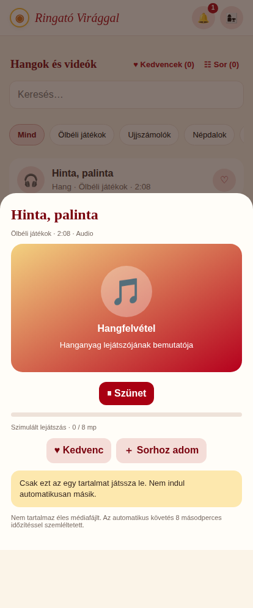
KÉPERNYŐ 03
Audio – egyedi lejátszás
Hangfelvétel saját kezelőkkel; nem indul el automatikusan másik elem.
Prototípus állapot: openContent("hinta")
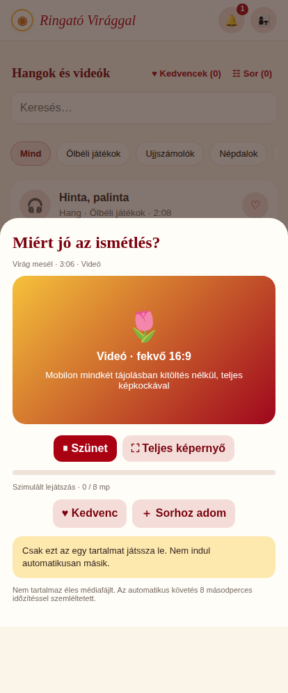
KÉPERNYŐ 04
Videó – fekvő 16:9
Fekvő videó eredeti 16:9 arányban és teljes képernyő gombbal. Nincs képarányváltó.
Prototípus állapot: ACTIVE;openContent("mesel")
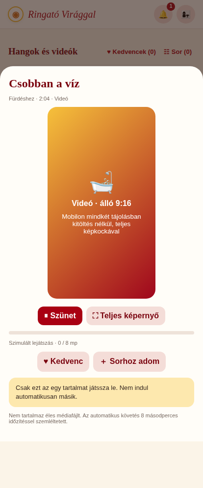
KÉPERNYŐ 05
Videó – álló 9:16
Álló videó; telefon elforgatásakor teljes képkocka, contain.
Prototípus állapot: ACTIVE;openContent("furdes")
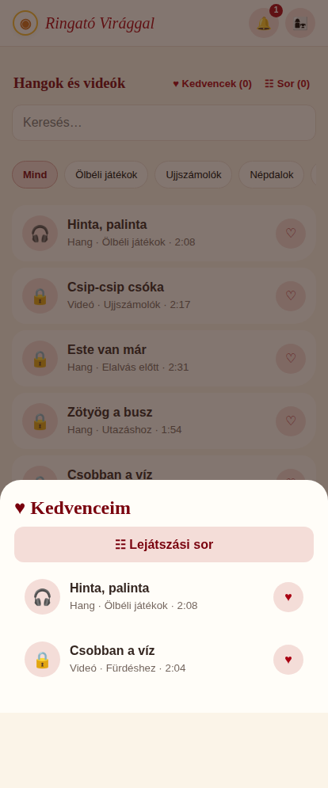
KÉPERNYŐ 06
Kedvencek
Bármely kedvenc egyesével indítható; elérhető mellette a Sor.
Prototípus állapot: state.favorites=["hinta","furdes"];save();showFavorites()

KÉPERNYŐ 07
Sor – átrendezés
Fel/le rendezés; bármely tételről indítás, sor végén megáll.
Prototípus állapot: queue("hinta");queue("csip")
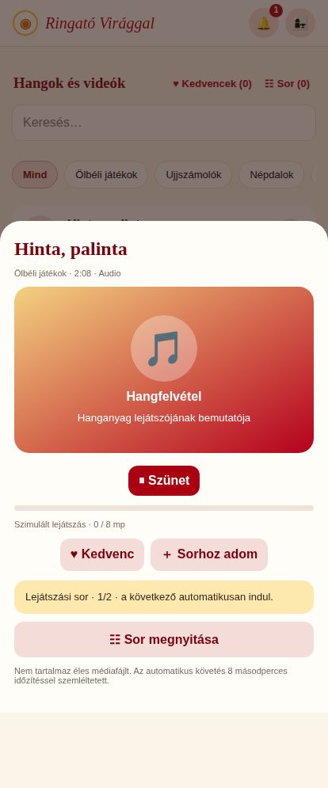
KÉPERNYŐ 08
Sor – lejátszás közben
Szimuláltan a következő tartalom automatikusan indul.
Prototípus állapot: state.queue=["hinta","nepdal"];save();playQueue(0)
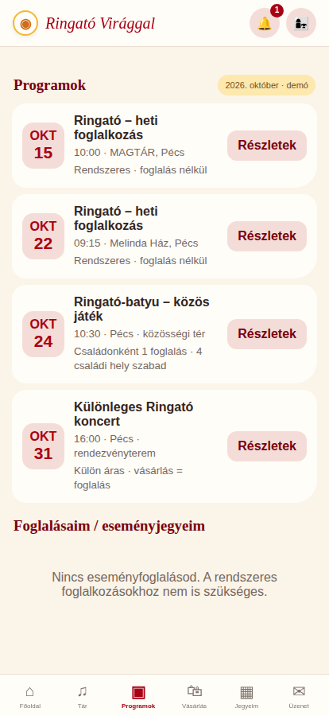
KÉPERNYŐ 09
Programlista – három programtípus
Rendszeres, családonként limitált foglalós és külön áras program.
Prototípus állapot: calendar
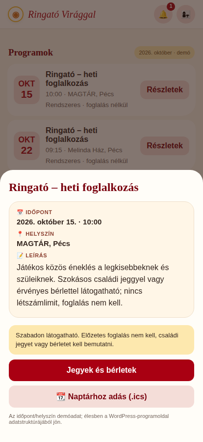
KÉPERNYŐ 10
Szokásos program részletei
Időpont, helyszín, leírás, naptárhoz adás, belépés jeggyel/bérlettel.
Prototípus állapot: eventDetails("regular1")

KÉPERNYŐ 11
Foglalható program – előtte
Egy család = egy hely; belépéshez külön jegy vagy bérlet szükséges.
Prototípus állapot: eventDetails("limited")
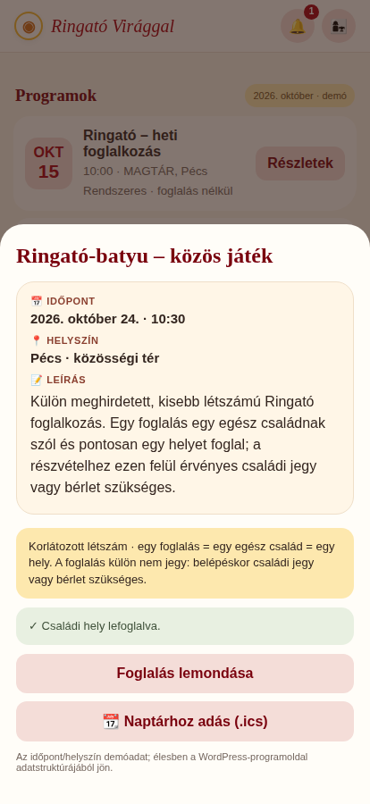
KÉPERNYŐ 12
Foglalható program – utána
Foglalás után is megnyitható részletoldal, naptár és lemondás.
Prototípus állapot: state.bookings.push("limited");eventDetails("limited")
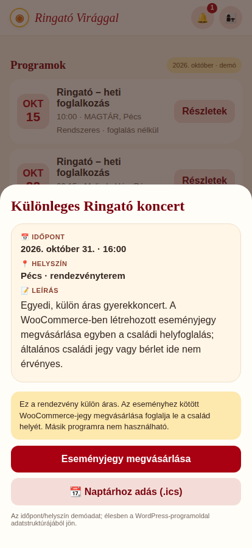
KÉPERNYŐ 13
Külön áras esemény – előtte
Eseményhez kötött jegy WooCommerce-vásárlása foglal helyet.
Prototípus állapot: eventDetails("concert")
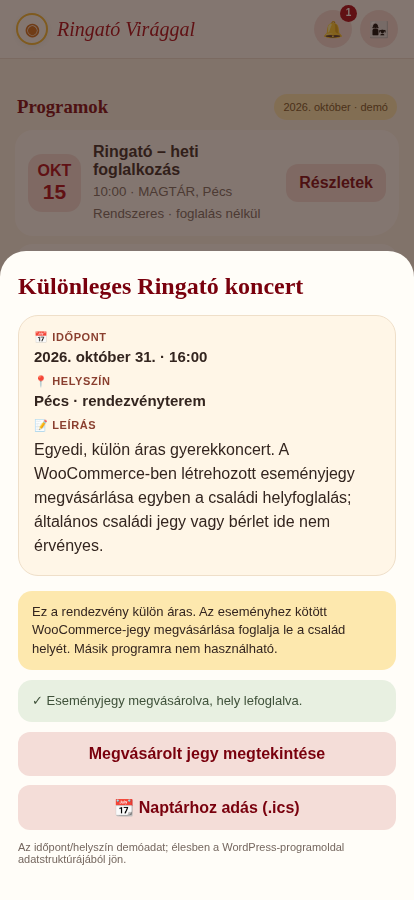
KÉPERNYŐ 14
Külön áras esemény – utána
Jegyvásárlás után is megtekinthetők a programrészletek.
Prototípus állapot: state.paidBookings.push("concert");state.eventTickets.push({id:"EV-DEMO",eventId:"concert",orderId:"WC-DEMO-EV",usedAt:null});eventDetails("concert")

KÉPERNYŐ 15
Vásárlás – termékek és előfizetés
WooCommerce termékek és külön 8 000 Ft-os havi app-előfizetés.
Prototípus állapot: store
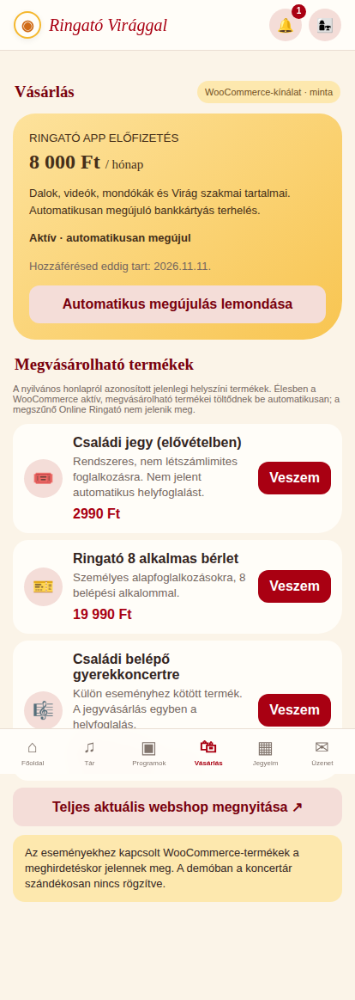
KÉPERNYŐ 16
Aktív havi előfizetés
Automatikusan megújuló médiatár-előfizetés.
Prototípus állapot: ACTIVE
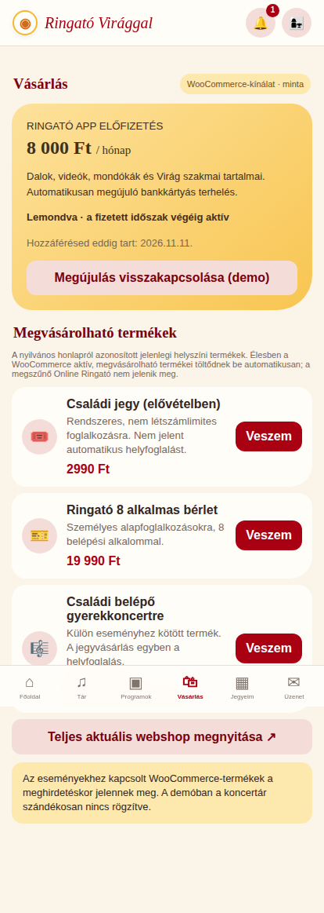
KÉPERNYŐ 17
Lemondott előfizetés
Már kifizetett időszak végéig elérhető a médiatár.
Prototípus állapot: ACTIVE;ENDING

KÉPERNYŐ 18
Jegyek, bérlet és rendelések
Külön látható a használható/felhasznált/lejárt családi jegy; bérlet és rendelések.
Prototípus állapot: passes
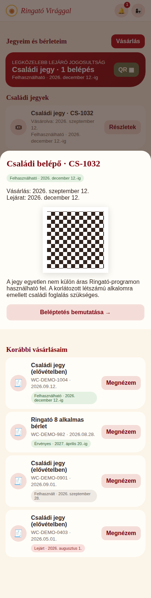
KÉPERNYŐ 19
Családi jegy – felhasználható
A vásárlástól 3 hónapig egyetlen nem külön áras programon váltható be.
Prototípus állapot: showTicket("CS-1032")
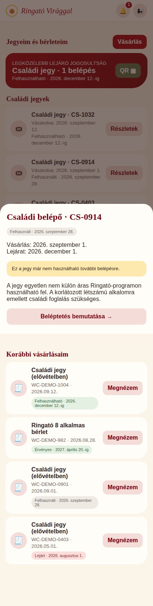
KÉPERNYŐ 20
Családi jegy – felhasznált
Már beváltott jegy: további programokon nem használható.
Prototípus állapot: showTicket("CS-0914")
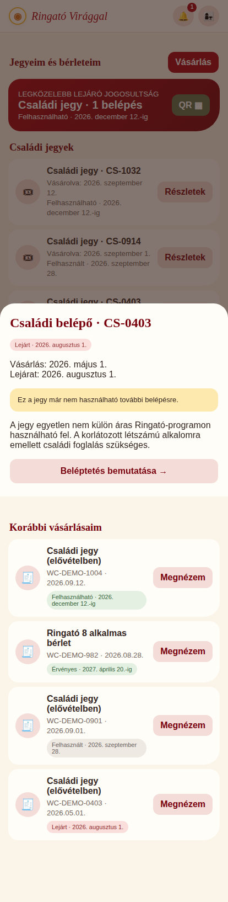
KÉPERNYŐ 21
Családi jegy – lejárt
Három hónap után beváltás nélkül is lejárt státusz.
Prototípus állapot: showTicket("CS-0403")
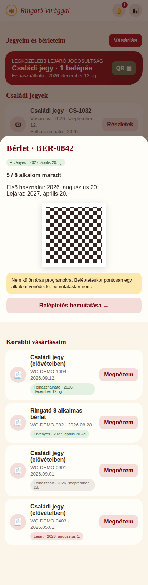
KÉPERNYŐ 22
Bérlet – aktív
Első használattól 8 hónapig, fennmaradó alkalomszám.
Prototípus állapot: showPassId("BER-0842")

KÉPERNYŐ 23
Staff – QR/bérlet ellenőrzés
Családi jegy egyszer érvényes; bérlet egy alkalommal csökken; külön eseményjegy kötött.
Prototípus állapot: scan()
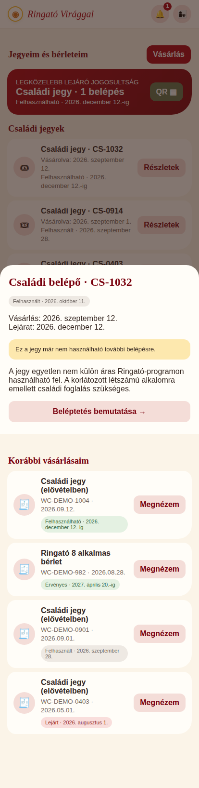
KÉPERNYŐ 24
Beváltott jegy státusza
QR beváltás után a jegy többé nem használható, más eseményen sem.
Prototípus állapot: redeem("ticket","CS-1032","regular1");showTicket("CS-1032")

KÉPERNYŐ 25
Push előzmények – új jelölés
365 nap történeti lista, előző megnyitás óta érkezett értesítések ÚJ jelzéssel.
Prototípus állapot: showNotifications()
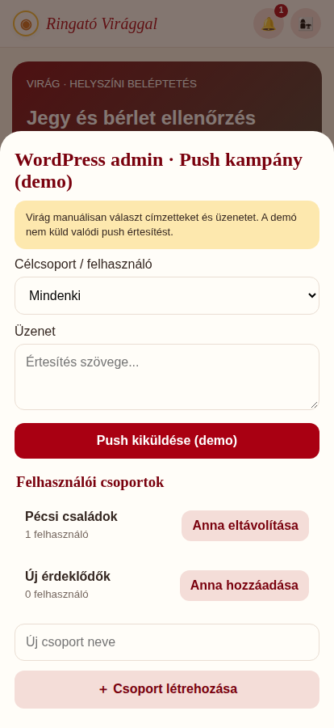
KÉPERNYŐ 26
Virág push – célcsoportok
Manuális egyéni vagy csoportos címzés és üzenet; csak demonstráció, véglegesen WP admin.
Prototípus állapot: staffNotificationModal()
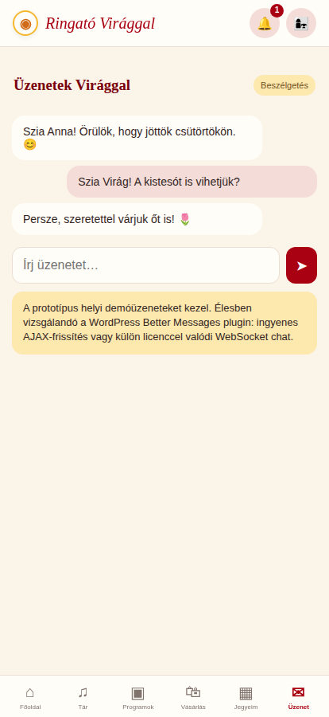
KÉPERNYŐ 27
Üzenetek Virággal
WordPress Better Messages AJAX / licencelt WebSocket lehetséges.
Prototípus állapot: messages
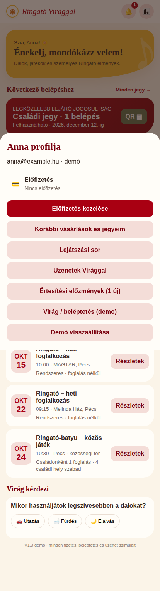
KÉPERNYŐ 28
Profil / navigáció
Előfizetés, jegyek, sor, értesítések, üzenetek kezelése.
Prototípus állapot: showProfile()
08 · Architekturális és nem-funkcionális követelmények
Integráció
WordPress-fiók és admin; WooCommerce-terméktörzs, rendelés, előfizetés és fizetés; Barion recurring engedélyezett integrációval. Ringató WP plugin REST API: program, foglalás, bérlet, jegy, jogosultság, média, üzenet, push. PWA ajánlottan ugyanazon domain /app útvonalán. Média biztonságos CDN-ről.
Tranzakciók és jogok
Webhook idempotencia, sikertelen fizetés esetén nem készül végleges foglalás. Kapacitást szerveroldali zárolás védi. QR-ben nincs személyes adat; staff jogosultság és auditnapló. Az előfizetés lejáratát szerver ellenőrzi.
Minőség és biztonság
HTTPS, auth + capability check, CSRF, GDPR adatminimalizálás, tartalomvédelem, mentések, staging környezet, regressziós WooCommerce/Barion tesztek. iOS/Android PWA, négy videóorientáció, fizetési hiba, kapcsolatszakadás és több eszköz tesztelendő.
09 · Nyitott döntések
| Téma | Egyeztetés |
|---|---|
| WooCommerce termékkatalógus | Az éles Store API minden aktív megvásárolható terméket, például eseményjegyeket is visszaadjon. CORS/ugyanazon domain megoldandó. |
| Családi jegy részletei | A három hónapos lejárat a vásárlás időpontjához képest; helyi időzóna és naptári hónapok kezelése. |
| Bérlet lejárata | 8 hónap az első érvényes beléptetéstől; nem kell-e más napi használati korlát? |
| Családi kapacitás | A család pontos definíciója és egy foglalás maximális részvételi összetétele. |
| Korlátozott program | Várólista? Lemondási határidő? Túlfoglalás kizárása szerveroldali tranzakcióval. |
| Jegy-beléptetés | QR opaque token és staff capability, egyetlen beváltás minden rendezvényre globálisan, audit. |
| Push csoportok | Kezdeti csoportok, címzettség, hozzájárulás és manuális kampány előnézet. |
| Üzenetek | Better Messages ingyenes AJAX teszt vagy licencelt WebSocket, WP REST/UI/PWA beágyazhatóság. |
| Média | Valódi audio/video feltöltés, CDN, iPhone landscape fullscreen, HLS és automatikus sor. |
| Program részletek | Valós WordPress program metaadatok és eseményhez kapcsolt naptár export. |